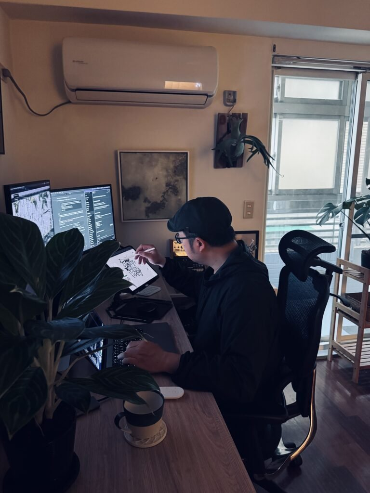
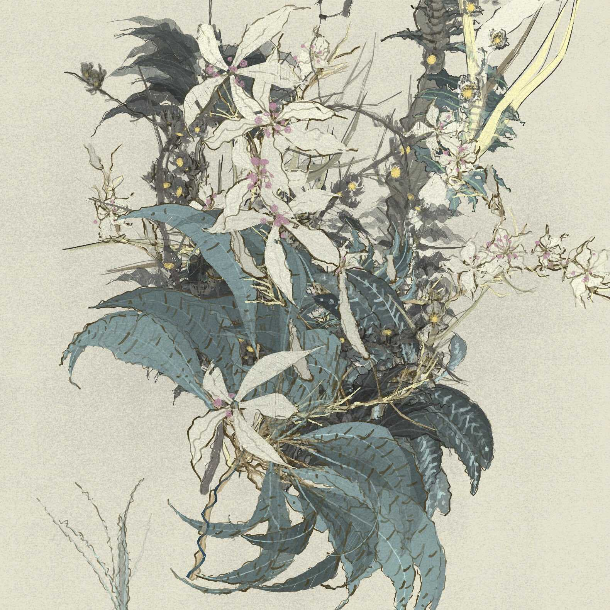
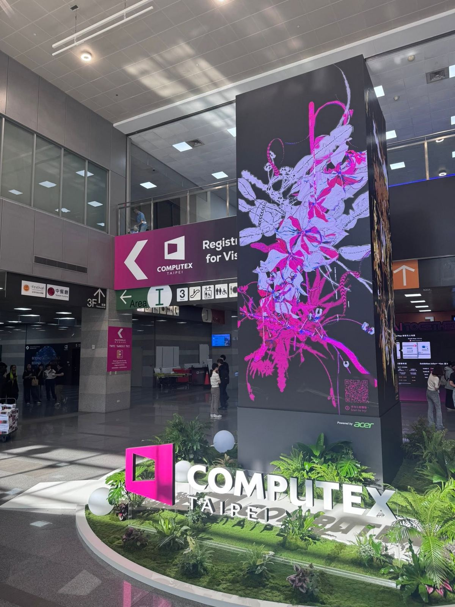
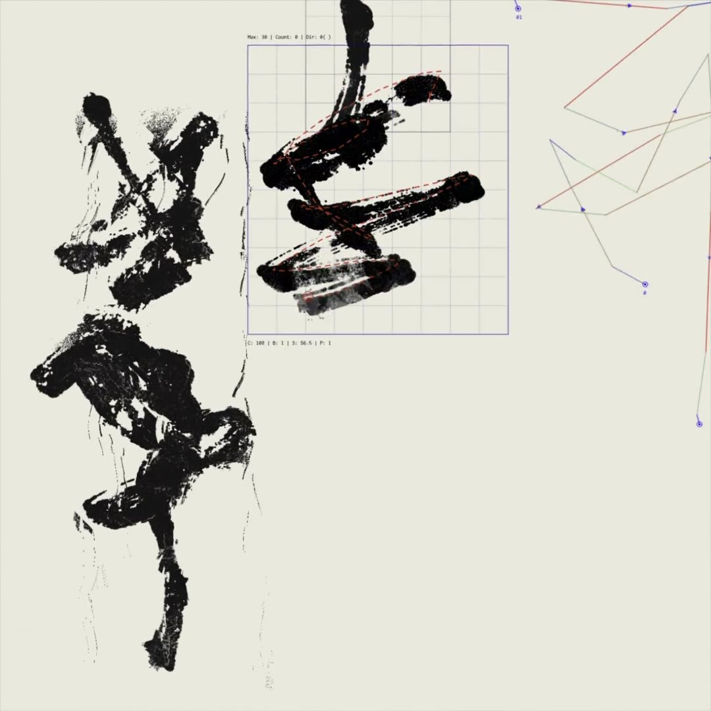
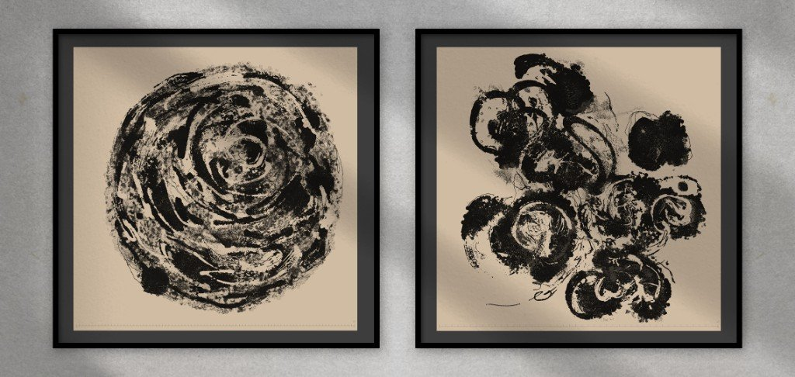
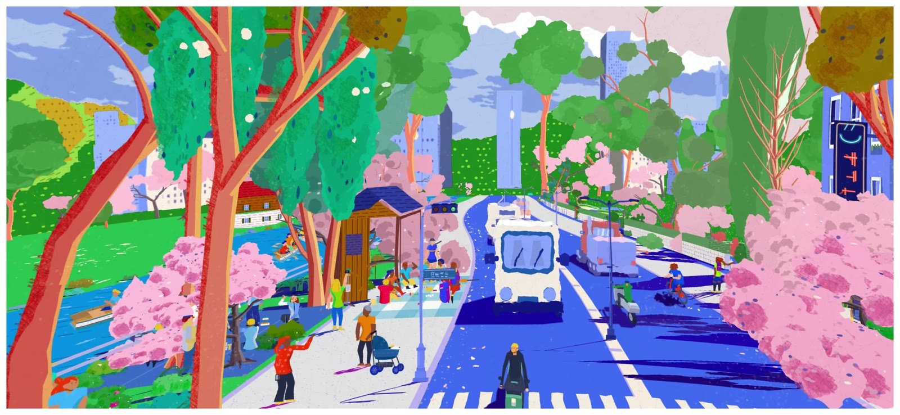

ART TAIPEI 2026 · 第五場藝術講座 科技與藝術之間：創作、感知與新經驗
一條路徑，
長成一座森林
阿亂 王新仁 Aluan Wang
生成藝術家 ｜ akaSwap 共同創辦人暨藝術總監
關於我
寫規則的人，
讓作品自己長出來
- 新媒體藝術出身，十五年以上的程式創作
- 2021 在 Art Blocks 發表第一件長篇生成作品
- 《植徑集》2025 年由國立臺灣博物館典藏
- 2025 柏林 Galerie Met 個展，海外首展
- 台北數位藝術節首獎（2012、2015）

工作室
AI 與藝術
AI 的出現無法避免，
藝術家能選擇的，是面對它的方式
守住稀缺
像精品一樣
專注在 AI 做不到的那一塊，物以稀為貴，守住人類共同的價值。
與它共處
成為伴侶
思考怎麼和 AI 成為一個好的創作夥伴。
我的選擇
同頻共振
身心靈都處在跟它同樣的頻率，一起脈動。
AI 時代之後
當畫面變得容易，藝術在討論什麼？
已經被解決
畫面與美感
輸出一張漂亮的畫面，變得很簡單。
被重新重視
意圖與行為
人們回頭看藝術家想做什麼、做了什麼。
生成藝術正在做的
系統與共同參與
建立系統，邀請人群進入；不同的思考匯入，作品因此長大。
讓作品超越一個藝術家的意志，
成為集體意志的藝術。這正成為這個世界上，藝術新的方向。
一條貫穿的線
我所有的作品，都在畫同一條「路徑」
2020 前
音像作品
向量、點、力的碰撞
聲音與影像同源
2021
Good Vibrations
區塊鏈上的第一件作品
路徑的交叉與碰撞
2023–25
植徑集 Polypaths
路徑長成植物
觀眾一起種
2025–
墨域 inkField
路徑有了速度與呼吸
保存畫的過程
“the paths and vectors inside it kept growing. Polypaths came from that. inkField came from Polypaths.”
植徑集 Polypaths 2023–2025
自然，是最早的
生成藝術家
每一株植物，都像一組正在運動的參數：葉序、節間、葉緣、分枝的角度。
不是模仿植物，而是理解植物——它們怎麼分枝、怎麼跟限制協商、怎麼在秩序與混沌之間生長。

《植徑集 Polypaths》
打破單向輸出
藝術家是系統建構者，
觀眾是園藝師
- 觀眾親手畫一條路徑，系統把它讀成種子和枝幹
- 畫面的結果有時像天堂，有時一塌糊塗——大好大壞都值得一看
- 參與式版本被玩家叫作「全民種菜」
「假日最快樂的事，
就是一杯咖啡，
還有刷《植徑集》。」一位藏家
感知
從觀看，到參與
當作品走進商展、走進人潮，
觀眾不只是看，而是在作品裡留下自己的一筆。
COMPUTEX × ART TAIPEI 2026 Art Connected
《植徑集——共生之鍊》
立在南港展覽館一館的精神堡壘。觀眾掃 QR Code，化身「數位園丁」，畫下的軌跡即時演算成生長的藤蔓。

COMPUTEX 2026，南港展覽館一館
設計一段 30 秒的參與
每個人，都在前一個人停下的地方生根
01
掃 QR
柱體四面都有 QR Code，從哪一面走近都能加入
02
先看見前人
手機上先出現上一位留下的植物，再開始畫
03
畫一條路徑
30 秒內用手指畫下，系統讀成分枝與藤蔓
05
長上大柱
選擇分享的人領號碼排隊，長進公共的森林
手機是私密的輸入，大螢幕是集體的輸出，系統在背後把每一筆縫進下一位的畫面。
從商展現場學到的事
同一套系統，換一個場域，
就是另一件作品
- 節奏是設計出來的。美術館裡可以慢慢端詳；商展的人潮只給你 30 秒。
- 看見前人，陌生人才會連起來。先看到上一位的植物，畫的人會考慮延伸、交錯，還是留白。
- 藝術與合作方的協商。柱體的金、桃紅、綠三種色調，由現場人員觸發，回應贊助方的色彩——作品要能容納這種對話。
- 同一個系統，也在柏林個展、新北市美術館以不同的配置展出。
讓觀眾一直回來的，
不是畫面多好看，
而是知道——作品跟他們有關係。參與式的共感：看得見自己留下的那一筆
墨域 inkField 2025–
保存的不是畫，
是畫的過程
- 每一筆都被記錄：座標、時間、速度、壓力，連手的猶豫也記下
- 按下播放，不是放影片，而是把整幅畫重新執行一次
- 墨的擴散、滲透、飛白，每一次都重新計算

inkField 播放：整幅畫被重新執行一次
「算力可以造假，
但消耗掉的真實時間
無法造假。」謝赫六法第一法：氣韻生動——留在系統裡的那口「氣」

inkField《聚散》
正在進行 前往美術館的路上 On the Way to the Museum
空想的風景，
長在我走過的路上
寫生，東方西方都一樣：不是把眼前全部畫下來，而是篩選、剔除、重新擺放。
一套生成系統，只畫我生命中真正走過的地方。
“imagined landscapes, built from the paths my life has crossed.”

前往美術館的路上：即時生成的街景
集體意志，也發生在收藏端
Kento：數位藝術版的寶可夢卡
- objkt 推出的實體藝術卡包，用一般貨幣購買，不需要加密錢包
- 一包 5 張、抽稀有度；高稀有卡用特殊油墨、燙金、全像卡紙
- 卡背刮開銀漆，有兌換碼，可以換到這件作品的數位原作
- 不刮，兌換權就跟著實體卡走，可以交換、送人
在 NFT 市場急速緊縮時反而賣得很好：收藏不只是擁有，也可以是參與。這是下一代藏家的入口。
951
位 Kickstarter 支持者
首刷版售罄
科技與藝術之間
四個正在發生的轉變
從觀看
↓
到參與
觀眾在作品裡留下自己的一筆，作品因此跟他有關。
從圖像
↓
到行動
保存畫的過程與時間，而不只是一張結果。
從擁有
↓
到遊玩
收藏本身成為一種體驗，吸引新一代的藏家。
從作者
↓
到園丁
藝術家設定世界的語法，讓別人——甚至 AI——接著長。
讓作品超越一個藝術家的意志，
成為集體意志的藝術。
謝謝
阿亂 王新仁 Aluan Wang
aluanwang.com · X @IOivm